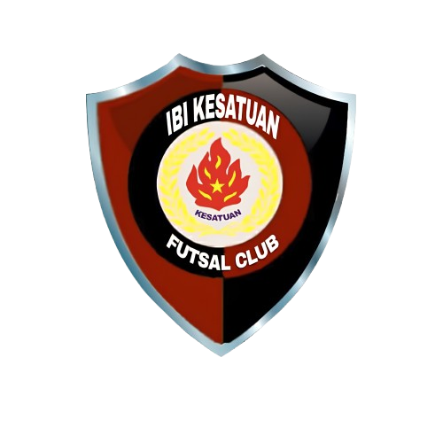
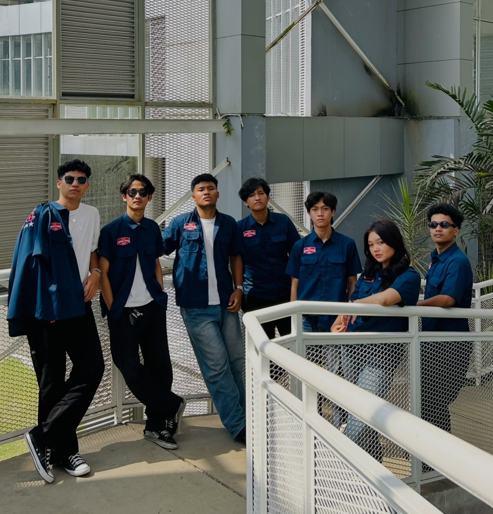

COORDINATION
Berkoordinasi dengan pelatih mengenai jadwal, tempat, dan materi latihan, serta menentukan kebutuhan pemain untuk mengikuti turnamen.

LAMBANG DJAYA OFFICIAL MANAGER · 26/27TEAM INTRODUCTION · SEASON 2026/2027
Kami mengurus hal-hal di balik pertandingan, supaya tim bisa fokus memberikan yang terbaik di lapangan.
MORE THAN MATCHDAY
Sebuah tim tidak hanya dipersiapkan ketika pertandingan dimulai. Ada banyak hal di balik layar yang memastikan setiap pemain dan tim dapat berjalan dengan baik.
Official Manager bertanggung jawab mengelola administrasi pemain, mengatur pembayaran gaji pelatih, serta berkoordinasi dengan pelatih mengenai jadwal, tempat, dan materi latihan hingga penentuan pemain yang mengikuti turnamen. Kami juga mendampingi tim saat pertandingan untuk memastikan kebutuhan tim tetap terpenuhi, sehingga pemain dapat fokus memberikan performa terbaik di lapangan.
PERTANDINGAN YANG BAIK DIMULAI DARI PERSIAPAN YANG BAIK.
OUR MINDSETONE TEAM, DIFFERENT ROLES
Kenali orang-orang yang ada di balik jalannya tim. Klik kartu untuk membaca profil singkat.
OUR RESPONSIBILITY
Peran kami sederhana: membuat persiapan tim lebih siap dan teratur.
Berkoordinasi dengan pelatih mengenai jadwal, tempat, dan materi latihan, serta menentukan kebutuhan pemain untuk mengikuti turnamen.
Mengelola administrasi dan data pemain agar informasi tim tetap lengkap, rapi, dan terorganisir.
Mendampingi tim saat pertandingan dan memastikan kebutuhan tim terpenuhi agar pemain dapat fokus bertanding.
Mengelola kebutuhan operasional tim, termasuk pembayaran gaji pelatih dan kebutuhan pendukung lainnya.
NOT JUST THE SCORE

LAMBANG DJAYA · 2026/2027
Kami bukan cuma bagian dari pertandingan. Kami bagian dari tim.
MEET YOUR TEAM ↗